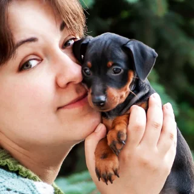
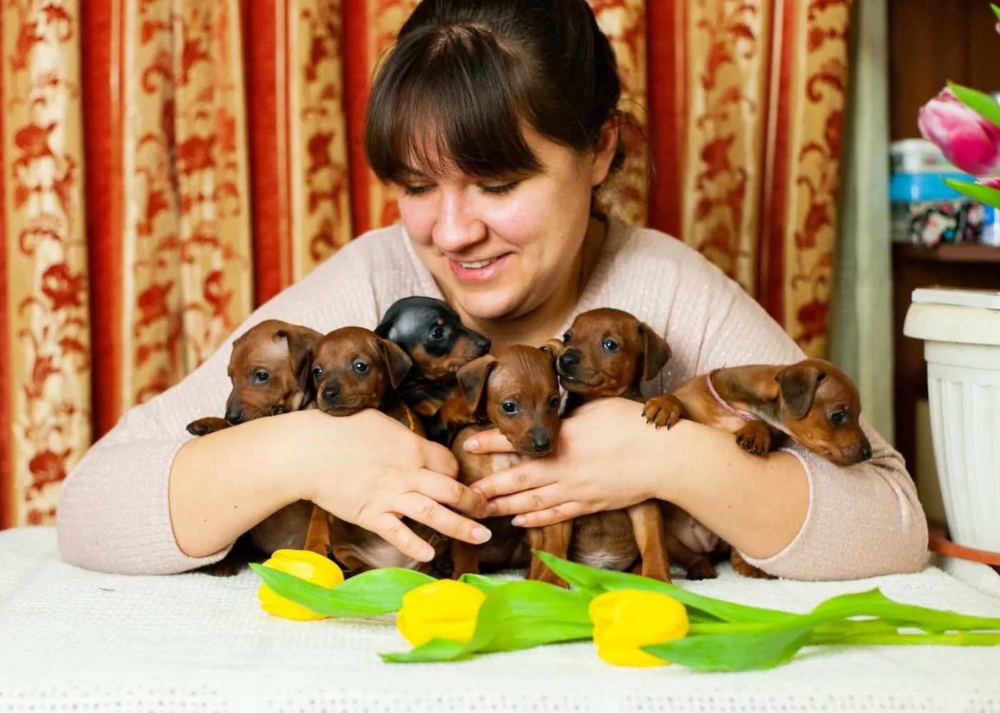
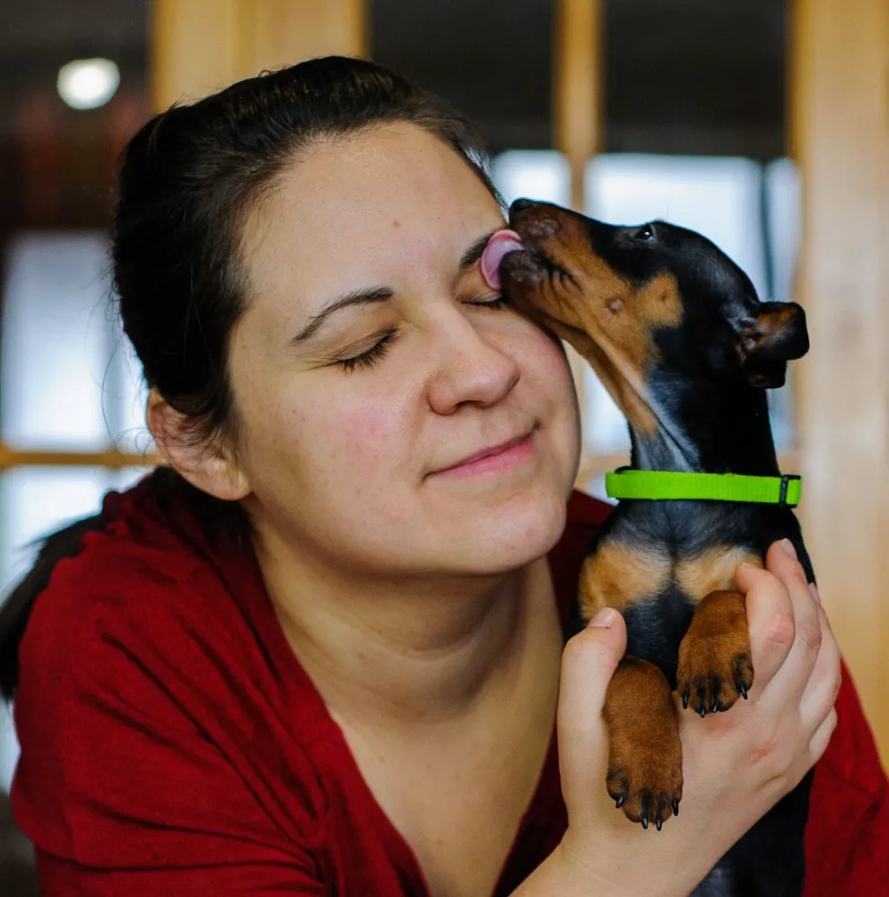
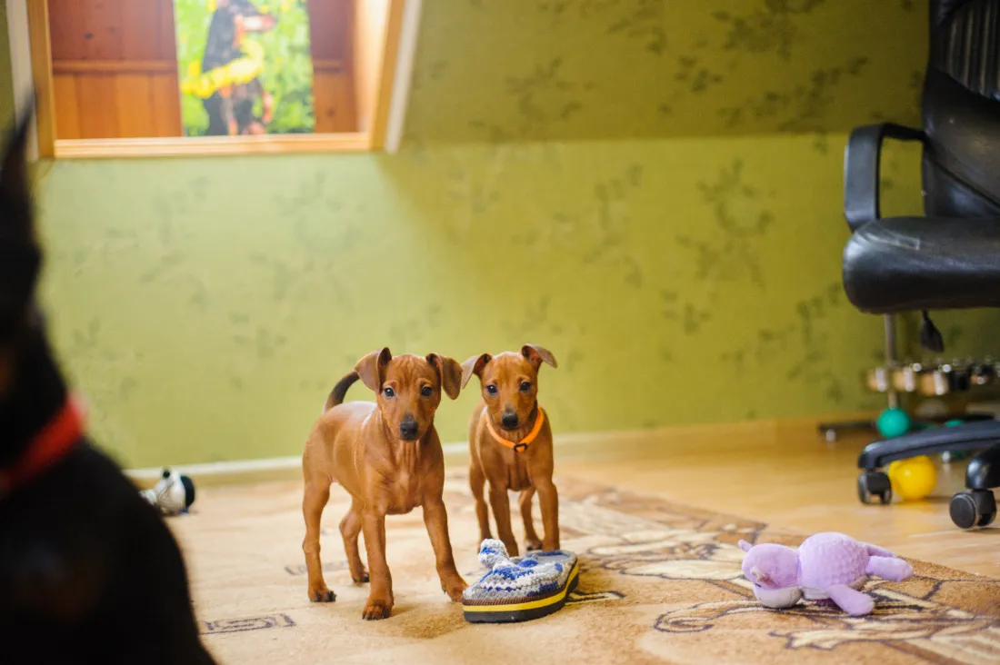
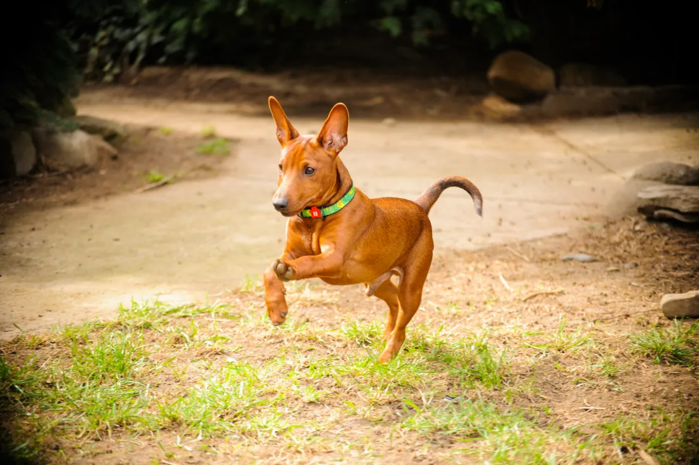

Для квартири
Важить 4–6 кг, гладкошерстий, майже не пахне. Але щодня потребує прогулянок і гри.

Наші пінчери зростають у сімейному оточенні з перших днів. Допомагаємо підготуватись та залишаємось поруч з вами усе життя собаки.

Анастасія Пріньковська (Довгань)

Мене звати Анастасія Пріньковська (Довгань). Понад 15 років я живу з цвергпінчерами і вирощую цуценят у своєму домі в Чернівцях.
Я не прагну виростити якомога більше цуценят. Моє завдання — виростити таких собак, яких я сама із задоволенням залишила б у своєму домі.
Цвергпінчер — маленький собака з характером великого. Чесно про те, кому він підійде.
Важить 4–6 кг, гладкошерстий, майже не пахне. Але щодня потребує прогулянок і гри.
Грайливий і веселий, добре ладнає зі школярами. З малюками — під наглядом дорослих: він маленький і тендітний.
Обожнює бігати, вчити команди й нові ігри. Без руху нудьгує — і тоді вигадує розваги сам.
Розумний, пильний і дуже відданий родині. Не для тих, хто надовго лишає собаку саму.
Не впевнені? Пройдіть тест за 1 хвилину — і дізнайтесь, чи підходить вам цвергпінчер.
Пройти тестуточнити: сезон або місяць приплоду, які батьки
У нас 1–2 приплоди на рік, тому цуценята часто знаходять родину ще до народження. Запишіться в лист очікування — ви першими дізнаєтесь про в'язку й народження.

Тут можуть бути ваші цуценята ♥
Зараз у розпліднику 1 кобель і 3 суки. У кожного — здорові коліна з сертифікатом пателли 0/0 і своє місце на дивані.
уточнити: хто на якому фото, імена, титули, дати народження
Вивих колінної чашечки — найчастіша проблема цвергпінчерів. У наших собак офіційні сертифікати пателли 0/0, тобто жодних ознак проблеми — і так уже в чотирьох поколіннях.

Метрика Кінологічної спілки України, яка обмінюється на родовід FCI, ветпаспорт із щепленнями, договір.
уточнити: чіп/клеймо, що ще входить
Батьки наших цуценят — переможці виставок і відповідають стандарту породи FCI.
уточнити: титули собак
Цуценята з перших днів живуть у сім'ї: звуки дому, люди, інші собаки. До переїзду вони вже не бояться світу.
Відповідаю на питання про годування, виховання і здоров'я — до переїзду, після і через роки.
Допомагаємо з переїздом цуценяти в будь-яке місто України та в інші країни.
Без поспіху і без передоплат наосліп.
Розкажіть про себе і про друга, якого шукаєте. Це 5 хвилин.
Поговоримо телефоном або по відео. Можна приїхати в гості до Чернівців — за домовленістю.
Повідомимо про в'язку, народження і надішлемо перші фото цуценят.
Допоможу обрати цуценя за характером. Бронювання — за договором.
уточнити: умови броні, завдаток
Дам список покупок і поради. Цуценя їде до вас із документами — по Україні і за кордон.
уточнити: у якому віці переїжджають
Я на зв'язку все життя собаки: здоров'я, виховання, годування — питайте будь-коли.
уточнити: попросіть 3–5 сімей надіслати фото з дорослим собакою і кілька речень
«Тут буде відгук: як цуценя адаптувалось, яким виріс собака, як допомагала заводчиця.»
«Тут буде відгук другої родини.»
«Тут буде відгук родини з іншої країни — підтвердить, що ви передаєте цуценят за кордон.»
«Тут буде відгук сім'ї з дітьми.»
Зібрала все, що перевіряю сама і що раджу перевіряти вам — у будь-якого заводчика, не лише в мене.
Заповніть анкету — і ви першими дізнаєтесь про наступний приплід Happy Stacyland.
Приїжджайте познайомитися з нашими собаками в Чернівцях — за домовленістю.